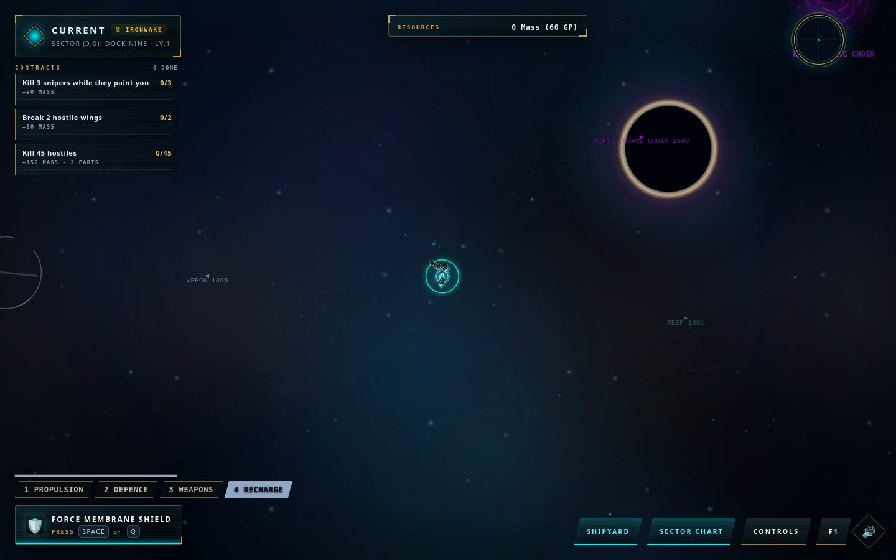

Build your own oddity.
Fit guns, thrusters and shields in the Shipyard. Change the silhouette. Try a different way to fight.
AN ARCADE EXPEDITION BY LYCHEETAH
Build something that feels like yours.
Take it somewhere it probably shouldn’t go.
Playable prototype · Browser game · Keyboard + mouse recommended
01 / THE GAME
Small enough to pick up. Strange enough to stay.A living hull. A few questionable guns. A dark ocean full of things with better equipment.
Black Current is a top-down arcade game about building a modular ship, breaking pieces off your enemies, and deciding when to bring the salvage home.

CURRENT PROTOTYPE / IN-GAME CAPTURETAKE THE HELM ↗Fit guns, thrusters and shields in the Shipyard. Change the silhouette. Try a different way to fight.
Strip parts from hostile hulls and collect the salvage. Your own ship can lose pieces, too.
Cross connected sectors, take contracts, find outposts and venture into the Grave Choir. Return with something worth keeping.
02 / STILL IN THE FORGE
This is an evolving prototype. Combat, ship fitting, salvage, contracts and bosses are already in the build. Balance, performance, art and the feeling of being out there are still being shaped.
The direction: clearer silhouettes, stranger places, a harbour that feels like home, and an ocean you can hear before you understand it.
Explore the atmosphere ideasYOU DON’T NEED A PERFECT SHIP
Browser saves stay on this device and site address.
Desktop is recommended; real phone testing is still underway.